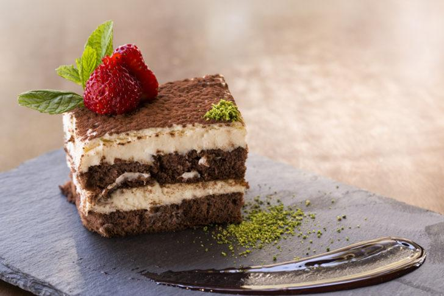
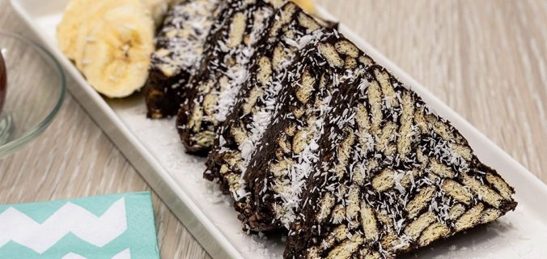
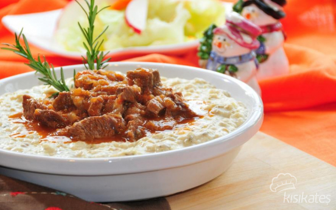

Islak kek tarifi için ilk olarak yumurta, şeker iyice çırpıldıktan sonra süt, sıvı yağ, kakao eklenerek tekrar çırpılır.
Kekimizi ıslatmak için bu karışımdan bir su bardağı ayrılır.
Kalan karışıma kabartma tozu, vanilya ve elenmiş un karıştırılarak kek hamuru oluşturulur.
Yağlanmış tepsiye ya da borcama dökülerek 170 derecede fırına sürülür, yaklaşık 35 dakika pişirilir. Benim kullandığım borcamın ölçüsü 28*22 cm.
Fırından çıkan kekin ilk sıcaklığı çıktıktan sonra yani 10 dk kadar sonra dilimlenir, üzerine yavaş yavaş ılıyan sos her yerine gelecek şekilde dökülür. Keki beklerken üzeri için ayırdığınız karışımı uygun bir tavaya alarak üzerine süt ilave edilir ve ocakta 5 dakika kaynatılır.
Üzerine iri parçalanan ceviz serpilir.
Kekin sosu güzelce çekmesi için 2-3 saat dinlendirildikten sonra ıslak kek servis edilebilir.Deneyecek olanlara afiyet şifa olsun 💝
Tiramisu Tarifi

Malzemeler
1 adet pandispanya keki
2,5 su bardağı süt
3 yemek kaşığı toz şeker
3 yemek kaşığı un
1 adet yumurta
1/2 su bardağı sıcak su
3'ü bir arada hazır kahve
Kakao
Tiramisu Yapımı
Öncelikle muhallebi için şeker, un, süt ve yumurta ocakta
kaynayıncaya kadar karıştırılrak pişirilir. Kaynadıktan sonra
altı kapatılarak ılımaya bırakılır.
15 dk kadar bekleyip ılıdıktan sonra labne peyniri ilave
edilip mikser ile pürüzsüz hale gelene kadar çırpılır.
Diğer taraftan sıcak su içinde hazır kahve çözdürülerek hazırlanır
ve hafif soğuması beklenir.
Servis tabağına pandispanya kekinin bir katı yerleştirilerek
kahvenin yarısı ile ıslatılır.
Üzerine kremanın yarısı ilave edilip kalan kahve ile üst kat da
ıslatıldıktan sonra ikinci kat kapatılır.
Kalan krema pastanın üzerine dökülerek pastanın üzeri ve
kenarları güzelce kapatılır.
Son olarak pastanın üzerine süzgeç yardımı ile kakao serpilir.
Buzdolabında birkaç saat dinlendirildikten sonra dilimlenerek servis edilir. Deneyecek olanlara afiyet şifa olsun 💝
Mozaik Pasta Tarifi

Malzemeler
300 gram petibör bisküvi
1 su bardağı süt
1 paket vanilya
3 yemek kaşığı kakao
1 paket kabartma tozu
1 su bardağı ceviz veya fındık(isteğe bağl)
3 yemek kaşığı eritilmiş tereyağı
Mozaik Pasta Yapımı
Mozaik pasta için öncelikle bisküvileri kırıyoruz, kırarken de fazla ufalamamaya dikkat ediyoruz.
Tereyağını bir tavada eritiyoruz.
Eriyen yağı, sütü, şekeri ve kakaoyu bir kabın içerisinde güzelce karıştırıyoruz.
Elde ettiğimiz karışımı, kırmış olduğumuz bisküvilerin üzerine döküyoruz veya tam tersi bisküvileri bu karışımın içine ekleyebilirsiniz. Bu aşamada isteğe göre ceviz, fındık veya Antep fıstığı da ilave edebilirsiniz.
Daha sonra bisküvileri ezmemeye özen göstererek, iyice karıştırıyoruz.
Karışımı streç folyo arasına alarak, elimizle rulo şeklini veriyoruz veya uzun ince kabınız varsa onun içine de yerleştirebilirsiniz daha düzgün şekilli oluyor.
Kekin sosu güzelce çekmesi için 2-3 saat dinlendirildikten sonra ıslak kek servis edilebilir. Deneyecek olanlara afiyet şifa olsun 💝
Yemek Tariflerim
Fırında Sebzeli Misket Köfte Tarifi
Malzemeler
700 gram orta yağlı dana kıyma/li>
1 adet iri kuru soğan
1 adet yumurta
2 yemek kaşığı dolusu galeta unu
2 diş ezilmiş sarımsak
2-3 tutam kıyılmış maydanoz
Karabiber, kırmızı toz biber, kimyon, pulbiber ve tuz
3 adet iri boy havuç
3 adet iri boy patates
2 adet iri boy patlıcan
2 adet orta boy kabak
2 adet iri boy kapya biberi
6 adet sivribiber
4 adet iri boy kuru soğan
6-8 diş sarımsak
Yarım çay bardağızeytinyağı
Sosu için 1 yemek kaşığı salça
5 yemek kaşığı zeytinyağ ve isteğe göre baharatlar
Fırında Sebzeli Misket Köfte Yapımı
Soğan ve sarımsağı robotta püre şeklinde kıyıp köftelik yazdığım tüm malzemeyi ekleyelim ve birlikte yoğuralım.
Son olarak üzerini kapayıp buzdolabında en az yarım saat dinlendirelim.
Patlıcanları alaca şekilde soyalım, tüm sebzeleri eşit büyüklükte olacak şekilde orta boyutta küplere keselim (köfte ile aynı uyumda olacak şekilde ayarlayalım).
Geniş ve derin bir tepsi içerisine tüm doğranmış sebzeleri biriktirelim.
Üzerlerine tuz ve zeytinyağını gezdirip elle güzelce karıştıralım.
Daha sonra malzemeyi pişirme kabımıza döküp önceden ısınmış fansız alt üst ayarda 200° de alttan ikinci rafta 25 dakika pişirelim.
Bizde bu sırada dolapta hazır bekleyen kıymaya ceviz büyüklüğünde iri misket top şekli verip elde yuvarlayalım.
Süre sonunda sebzeleri fırından çıkarıp üzerlerine gelişi güzel köfteleri yerleştirelim.
Sosu için bir tasta tüm malzemeyi çırpalım ve köftelerin sebzelerin üzerine kaşıkla gezdirerek dökelim.
1 adet fırın kağıdını muslukta ıslatıp suyunu sıkalım. Ve tepsinin üzerine kapak şeklinde kapayarak örtelim.
Yine ikinci rafa, 45 dakikalığına fırına verelim. Süre sonunda üzerinden kağıdını alıp çatalla sebzeleri kontrol edip eğer piştiyse, kağıdını üzerinden tamamen alıp, 10-15 dakikada üzeri açık şekilde kızartarak pişirelim ve servis edelim. Deneyecek olanlara afiyet şifa olsun 💝
Hünkar Beğendi Tarifi

Malzemeler
200 gr kuşbaşı et
3 yemek kaşığı sıvı yağ
1 adet soğan
1 adet biber
1 adet domates
Yaklaşık 1 yemek kaşığı salça
1,5-2 su bardağı su
3 adet patlıcan
1 çay bardağı süt (az gelirse ilave edebilirsiniz)
1 yemek kaşığı tereyağı
1 yemek kaşığı un
Yarım su bardağı kaşar rendesi
Tuz,karabiber
Hünkar Beğendi Yapımı
İlk olarak patlıcanlar fırında ya da ocakta közlenir.
Közlenen patlıcanlar kabuğu soyulup doğranır.
Tavada yağ ve un kavrulur.
Patlıcanlar tavaya eklenir ve iyice ezilir.
Ocağın altı iyice kısılarak süt yavaş yavaş karıştırarak patlıcana ilave edilir.İyice karıştırılır.
Ardından kaşar eklenir, ocak kapatılır.
Kaşar da tamamen karıştırılarak beğendi hazırlanır.
Ayrı bir tava yağ ile ocağa konur.
Tava ısındığında etler ilave edilir.
Etler suyunu bırakıp çekene kadar kavrulur.
İnce doğranmış soğan ve biberler eklenir.
Onlar da kavrulunca salça eklenip karıştırılır.
Salçadan sonra çekirdekleri alınıp doğranmış domates eklenir.
1,5-2 su bardağı su da göz kararı eklenerek kapağı kapatılıp etler pişene kadar pişirilir.
Piştikten sonra tuzu, karabiberi eklenir. (Eğer etiniz geç pişecek bir et ise düdüklüde haşlayıp yapabilirsiniz. Su yerine et suyunuzu ilave edip pişirirseniz de aynı tadı elde edersiniz.)
Servis tabağınıza önce beğendiyi üstüne de etinizi koyarak servis edebilirsiniz.Deneyecek olanlara afiyet şifa olsun 💝
Boşnak Böreği Tarifi
Malzemeler
Hamur için:
1,5 su bardağı ılık su
4 su bardağı un
1/2 tatlı kaşığı tuz
Yufkaları açmak için:
125 gram tereyağı
1 çay bardağı ayçicek yağı
1 yemek kaşığı yoğurt
İç harcı için:
500 gram ıspanak
2 yemek kaşığı süt kaymağı
1 adet rendelenmiş kuru soğan
2 adet yumurta
1 çay kaşığı tuz
Üzeri için:
1 adet yumurta
1 yemek kaşığı yoğurt
Boşnak Böreği Yapımı
Ilık suyu derin bir karıştırma kabına alın. Azar azar eklediğiniz un ve tuz yardımıyla pürüzsüz bir hamur elde edene kadar yoğurun.
Elde ettiğiniz yumuşak kıvamlı hamurun üzerine nemli bir mutfak bezi kapatıp 30 dakika kadar oda ısısında dinlendirin.
Dinlenen hamuru, dört eşit bezeye bölüp mutfak tezgahı üzerinde yuvarladıktan sonra 30 dakika daha oda ısısında dinlendirin.
Yufkaları açmak için; tereyağını kısık ateşte eritin. Ilındığında ayçiçek yağı ve yoğurt ile karıştırın.
İç harcı için; ayıkladıktan sonra yıkayıp kuruladığınız ıspanak yapraklarını incecik doğrayın. Yumurta, rendelenmiş kuru soğan, süt kaymağı ve tuz ilavesiyle karıştırarak yoğurun.
Mutfak masasının üzerini pamuklu ve temiz bir mutfak örtüsüyle kaplayın. Dinlendirdiğiniz hamur bezelerinden birini alıp merdane yardımıyla açmaya başlayın. Aralarda hafifçe unlayın.
Belirli bir büyüklüğe ulaşan hamur bezesinin üzerini hazırladığınız katı-sıvı yağ karışımıyla yağlayın. Karşılıklı kenarlarından elinizle çekip olabildiğince ince bir hal alana kadar yufkayı büyütün.
Muntazam olması için yufkaların kenar kısımlarını bıçak yardımıyla kesip büyük dikdörtgenler hazırlayın. Kenar kısımlarına hazırladığınız ıspanaklı iç harçtan yayın. Yufkanın kenar kısımlarını üzerine kapatıp ortaya doğru rulo şeklinde sarın.
İç harç dolgusuyla içe doğru sardığınız hamurlar orta kısımda toparladığında bıçakla uzunlamasına kesin. Rulo börekleri iki taraftan birbirine bitiştirip aynı işlemi tüm hamur bezelerine uygulayın.
Yağlanmış fırın tepsisinin orta kısmından başlayarak hazırladığınız tüm hamur rulolarını spiral şeklinde sarın.
Üzerine çırpılmış yumurta ve yoğurt sürdüğünüz böreği önceden ısıtılmış 200 derece fırında üst ve alt kısmı kızarana kadar pişirin. Yufkaları ağızda dağılan nar gibi kızarmış Boşnak böreğini dilimledikten sonra sevdiklerinizle paylaşın. Deneyecek olanlara afiyet şifa olsun 💝